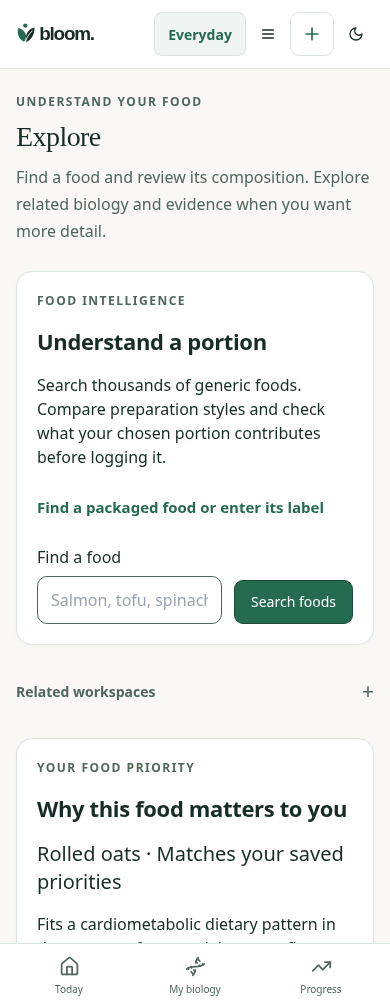
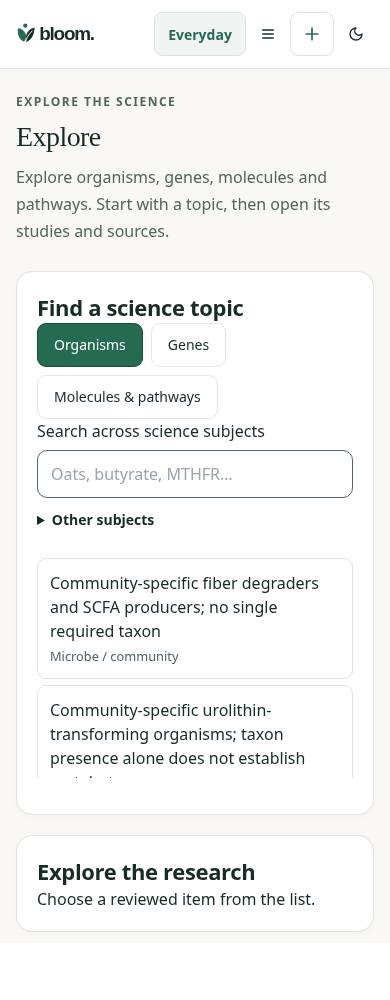

Matched synthetic account and public registry,390px light. Before:5842480. The new landing performs no automatic personal oats assessment. Explicit food deep links and composition lookup remain available.


12Selected topics expose meaning and limits before one Studies and sources expansion. All cited relationship context, direction, contradiction limits and source references remain. No recently explored history or scientific capability was invented.
Keyboard,44px subject controls,200% zoom and source/error/portion/unit/account paths were automated. Independent Design and physical VoiceOver are not inferred.